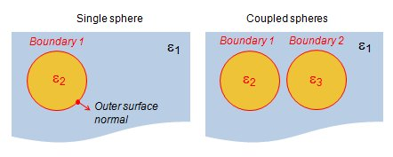
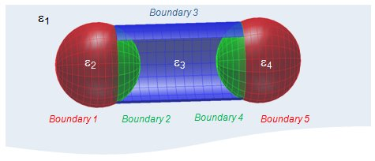

The comparticle class
The class comparticle stores composite particles, consisting of sharp boundaries that separate regions filled with different dielectric media, together with the information how these particles are embedded in the dielectric environment.
Contents
Initialization
% initialize COMPARTICLE object with closed argument p = comparticle( epstab, ptab, inout, closed, op ); % pass additional arguments p = comparticle( epstab, ptab, inout, closed, op, PropertyName, PropertyValue ); % initialize COMPARTICLE object without closed argument p = comparticle( epstab, ptab, inout, op );
In the initialization, one has to provide
- epstab={eps1,eps2,...} a table of dielectric functions,
- ptab={p1,p2,...} a table of discretized particle surfaces,
- inout=[in1,out1;in2,out2} an index array for the dielectric medium in- and out-side the particle surfaces (defined with respect to the outer surface normals),
- closed additional information whether the particle boundaries are open or closed surfaces, and
- op an option array that controls whether the particles boundaries are flat or curved and that defines the particle integration.
epstab is a cell array of all dielectric functions under use. It is fine if epstab contains unused materials. ptab is a cell array of all particle boundaries separating media with different dielectric materials. inout is a nx2 array of same size n as the number of particles. epstab{inout(i,1)} gives for the i'th particle the dielectric material at the inside and epstab{inout(i,2)} the material at the outside. In- and outside are defined with respect to the outer surface normal, which can be investigated through
% plot particle boundaries and outer surface normals plot( p, 'EdgeColor', 'b', 'nvec', 1 );
It is important that the materials are assigned to the proper boundary side, otherwise the BEM solvers will give completely wrong results. Finally, the closed arguments indicate closed particle boundaries.
Closed particle boundaries
For closed surfaces the surface derivative of the Green function  fulfills the sum rule (see e.g. R. Fuchs and S. H. Liu, Phys. Rev. B 14, 5521 (1976))
fulfills the sum rule (see e.g. R. Fuchs and S. H. Liu, Phys. Rev. B 14, 5521 (1976))

where the integration extends over a closed surface boundary  with outer surface normals. Upon discretizing the integral within a boundary element method approach, the expression translates to the fact that sum(F,2) should give 2*pi. In the MNPBEM program this is used to calculate the diagonal elements of F, which play an important role in particular for flat particle boundaries.
with outer surface normals. Upon discretizing the integral within a boundary element method approach, the expression translates to the fact that sum(F,2) should give 2*pi. In the MNPBEM program this is used to calculate the diagonal elements of F, which play an important role in particular for flat particle boundaries.
In the MNPBEM toolbox one can provide the closed argument in the initialization of a comparticle object p.
% indicate that P1 is a closed boundary p = comparticle( epstab, { p1 }, inout, 1, op ); % indicate that P1 and P2 are separately closed boundaries p = comparticle( epstab, { p1, p2 }, inout, 1, 2, op ); % indicate that P1 and P2 together form one closed boundary p = comparticle( epstab, { p1, p2 }, inout, [ 1, 2 ], op );
Alternatively, one can later call
% boundary 1 is a closed surface p = closed( p, 1 ); % boundaries 1 and 2 form a closed surface p = closed( p, [ 1, 2 ] ); % boundaries 1 and 2 form a closed surface, and we change the orientation % of boundary 2 such that the normal surface vectors become reversed p = closed( p, [ 1, -2 ] ); % boundary 1 together with boundary P2 form a closed surface p = closed( p, { 1, p2 } );
The above examples show different calling sequences. In the second line we indicate that particles 1 and 2 of the comparticle object p form a closed surface. In the last line we indicate that particle 1 together with an additional user-supplied particle p2 form a closed surface.
When a particle surface appears in several of the closed particle surfaces, there is a first-come, first-served principle. This means that the first appearence of a particle surface in one of the closed argument determines the closed surface that is chosen for the particle, e.g. through [1,2],[-1,3] we assign the surface [1,2] to particle 1.
Methods
The comparticle class has several methods inherited from the particle class.
% shift COMPARTICLE by vector [ x, y, z ] p = shift( p, [ x, y, z ] ); % rotate COMPARTICLE around given axis DIR (z on default) by angle PHI (degrees) p = rot( p, angle, dir ); % flip COMPARTICLE at axis AX, eg. ax = 1 for x-axis p = flip( p, ax ); % scale COMPARTICLE by factor S p = scale( p, s ); % change face directions p = flipfaces( p ); % select specific boundary elements % - either by providing a function in Cartesian, polar, or spherical coordinates, % - or by providing an index p = select( p, 'carfun', @( x, y, z ) fun( x, y, z ) ); p = select( p, 'polfun', @( phi, r, z ) fun( phi, r, z ) );
Additional methods can be inspected through the doc command.
Tips and tricks
Setting up comparticle objects calls for an alert user since several things can go wrong. A few common mistakes, which occasionally even happen to us as experienced developers of our own toolbox, are
- The outer surface normals point into the wrong direction. If this is the case, the in- and outside media are different from what one expects. Usually this does not lead to a runtime error, but in results that look unexpected such as broad scattering spectra with no pronounced plasmon peaks. We recommend to regularly check the orientation of the surface normals by plotting them through plot(p,'EdgeColor','b','nvec',1).
- The closed argument is not set properly. This will not lead to a runtime error but to wrong results. If one is not sure about the closed argument, one can set in the options structure the boundary interpolation to 'interp'='curv' and run the simulation with and without the closed arguments. If things are implemented properly, the results should not differ significantly. We recommend to use the closed argument for both flat and curved boundary elements.
- In epstab the first entry should be the dielectric function of the embedding medium. For layer structures the first entry should be the uppermost medium of the layer structure.
- When different particles are composed of the same material, we recommend to use different entries in the epstab cell array, as discussed below in the examples.
Examples

Single sphere. We first show how to set up the comparticle object for a single sphere that is embedded in a homogeneous dielectric background. To define this dielectric environment, we set
% table of dielectric functions epstab = { epsconst( 1.33 ^ 2 ), epstable( 'gold.dat' ) }; % sphere boundary (diameter of 10 nm) p = trisphere( 144, 10 ); % compound of particles in dielectric environment p = comparticle( epstab, { p }, [ 2, 1 ], 1, op );
First, we define a table (cell array) of all dielectric functions that are needed to describe the dielectric environment of the particle. In our example it consists of the dielectric constant for water and a dielectric function representative for gold. We recommend to set the first entry in the dielectric table to the embedding medium as several routines (e.g. for the calculation of scattering spectra) assume this on default.
We next set up a table (cell array) of particle boundaries. In case of the single sphere it consists of a single particle. The particles and dielectric functions are related through the inout array, which is passed as the third paramater to comparticle. In the above example it is a vector inout=[2,1] where the first entry corresponds to the medium inside the particle (defined through the direction of the surface normal) and the second entry to the material outside the particle. The last parameter in the comparticle initialization indicates that the particle bounday is closed.
Coupled spheres. Let us next look to the example of two coupled spheres
% table of dielectric functions epstab = { epsconst( 1.33 ^ 2 ), epstable( 'gold.dat' ), epstable( 'gold.dat' ) }; % sphere boundaries p1 = trisphere( 144, 10 ); p2 = shift( p1, [ 12, 0, 0 ] ); % compound of particles in dielectric environment p = comparticle( epstab, { p1, p2 }, [ 2, 1; 3, 1 ], 1, 2, op );
The dielectric table now consists of three entries. Note that we add the gold dielectric function twice to discriminate between the dielectric media of the left and right sphere. We recommend to use different entries in the dielectric table for dielectric media that are separated, although in principle one could also use a single dielectric function instead. In the call to comparticle we then define that with
- inout=[ 2,1 ; 3,1] the medium in- and out-side the first particle is described by the dielectric functions epstab{2} and epstab{1},
- inout=[2,1; 3,1 ] the medium in- and out-side the second particle is described by the dielectric functions epstab{3} and epstab{1}.
The last two 1,2 arguments in the comparticle initialization indicate that both particle surfaces are closed.
Dumbell nanoparticle. We finally discuss the more complicated example of a dumbell structure consisting of two metallic spheres separated by a semiconductor middle part.

Note that we have divided the spheres into two boundaries: one with the exterior region described by the background dielectric, and another one with the exterior region of the semiconductor middle part. To set up the dielectric environment we call
% table of dielectric functions epstab = { epsconst( 1.33 ^ 2 ), epstable( 'gold.dat' ), ... epsconst( 10 ), epstable( 'gold.dat' ) }; % compound of particles in dielectric environment p = comparticle( epstab, { p1, p2, p3, p4, p5 }, ... [ 2, 1; 2, 3; 3, 1; 4, 3; 4, 1 ], [ 1, 2 ], [ 4, 5 ], [ 3, -2, -4 ], op );
One should check carefully how the inout argument connects the different dielectric regions. In the closed argument we indicate that the boundaries 1 and 2 (red and green) form a single closed surface. The same applies to the boundaries 4 and 5, as well as boundary 3 together with boundaries 2, 4 (flipped faces).
Copyright 2017 Ulrich Hohenester